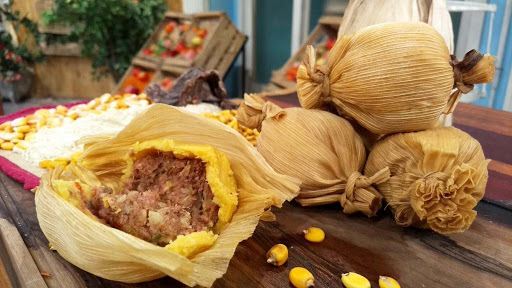

El tamal es un plato típico del norte, elaborado a partir de pasta de maiz y carne. Su opción sin carne se define como Humita.
La pasta es envuelta entre hojas de maiz, y cocida al vapor o en agua directamente. Existen indicios que afirman que los tamales ya eran producidos en Mesoamérica en la época prehispánica.
La palabra Tamal se define como "envuelto", en lengua Náhualt.

Ingredientes que vamos a utilizar para su preparación:
Harina de Maiz: 1kg.
Zapallo: 500grs.
Chalas de choclo.
Carne (opcional).
Cebolla.
Morrón.
Huevo.
Sal y pimienta a gusto.
Manos a la obra!
Cocinar en abundante agua hirviendo la harina de maiz (polenta), junto con el zapallo cortado en trozos pequeños. Condimentar con sal y pimienta a gusto una vez que la preparación está espesa.
Picar y saltear hasta dorar, la cebolla y el morrón. Agregar la carne (opcional) cortada en cubitos y dejar cocinar.
Una vez cocida la carne incorporada, agregar huevo duro picado, y condimentar con sal y pimienta a gusto.
Estirar sobre la mesa las chalas de maiz, formando una base, colocar la preparación de pasta de maiz y estirarla cubriendo casi la totalidad de la base de chalas.
Por encima de la pasta, agregar 2 cucharadas de la preparación de carne y esparcir pero sin llegar el borde de la mezcla anterior.
Cerrar como un paquete y atarlo con hilo de cocina o una tira de la misma chala.